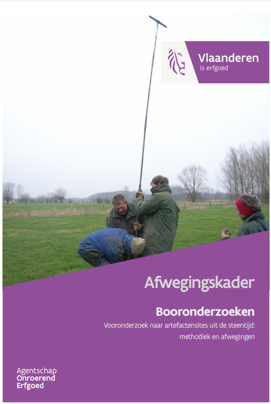

Handleiding booronderzoek
Erwin Meylemans 
Marijn Van Gils
14/06/2022

Welkom
Woord vooraf
Welkom bij de online versie van Booronderzoeken. Vooronderzoek naar artefactensites uit de steentijd: methodiek en afwegingen. Deze handleiding werd in 2022 gepubliceerd door het agentschap Onroerend Erfgoed en is als pdf te downloaden op de Open Archives Repository (OAR).
Met deze online versie willen we kleine aanpassingen aan de originele uitgave, veranderende inzichten en nieuwe toepassingen binnen het vooronderzoek naar artefactensites uit de steentijd - op basis van recente, wetenschappelijke ontwikkelingen - sneller ontsluiten. De basis van deze handleiding blijft de originele uitgave, maar hier kan je steeds de meest actuele versie raadplegen.
Citeren
Gelieve te citeren als:
Van Gils M. & Meylemans E. (2022-06-14). Booronderzoeken. Vooronderzoek naar artefactensites uit de steentijd: methodiek en afwegingen. Handleiding agentschap Onroerend Erfgoed, Brussel. https://hanecakr.github.io/handleidingBooronderzoek/
Oorspronkelijke gepubliceerd als:
Van Gils M. & Meylemans E. (2022-06-14). Booronderzoeken. Vooronderzoek naar artefactensites uit de steentijd: methodiek en afwegingen. Handleiding agentschap Onroerend Erfgoed, Brussel doi: https://doi.org/10.55465/SRER8557/.